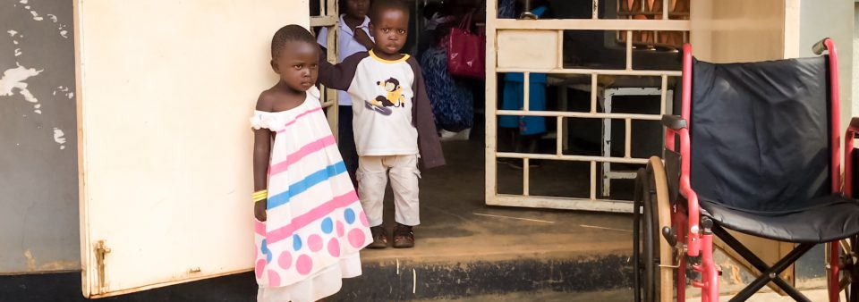
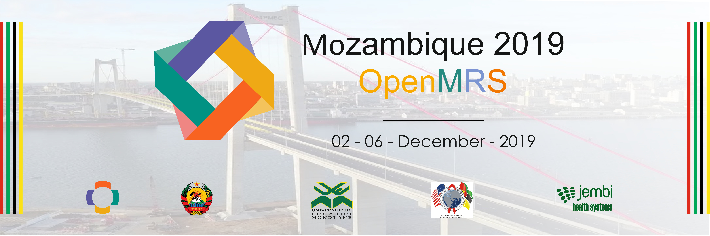

Help OpenMRS Fight Malaria!
Having a free, open-source electronic medical record platform (EMR) gave these impacted health clinics the tools necessary to support patient care in an easy-to-understand electronic format.
Click here to learn how OpenMRS is being used to combat malaria!


Join us in Maputo!
Visit OMRS19 for a detailed hackathon and meeting schedule, detailed information, and registration!
Visit OMRS19 for a detailed hackathon and meeting schedule, detailed information, and registration!

Distributions Program
Learn about OpenMRS Distributions and share your own. Click here to read more!
Learn about OpenMRS Distributions and share your own. Click here to read more!
The global OpenMRS community works together to build the world's leading open source enterprise electronic medical record system platform.
| We’ve come together to specifically respond to those actively building and managing health systems in the developing world, where AIDS, tuberculosis, and malaria afflict the lives of millions of people. | Our mission is to improve health care delivery in resource-constrained environments by coordinating a global community to create and support this software. Read more. |
Who are we?
The OpenMRS community is a worldwide network of volunteers from many different backgrounds including technology, health care, and international development. Together, we're working to build the world's largest and most flexible technology platform to support delivery of health care in some of the most challenging environments on the planet. No matter what your background or interest, we'd love to have you help us save lives with Health IT. Join us.
Where are we?
Although we started out to fix a database system in a single clinic in Kenya, in the last few years OpenMRS has grown dramatically to be used both in research and clinical settings in every corner of the planet. We're very proud of the innovators using OpenMRS to improve health care worldwide. Take a look where OpenMRS is being used.
Demo our software | Download OpenMRS |
We’ve come together to specifically respond to those actively building and managing health systems in the developing world, where AIDS, tuberculosis, and malaria afflict the lives of millions of people. | Our mission is to improve health care delivery in resource-constrained environments by coordinating a global community to create and support this software. Read more. |
"We’re bringing “open” to healthcare." |
| OpenMRS is a global leader in open technologies and open standards in health care. It isn’t just open software—we strive to be open and transparent in everything we do, and encourage our collaborators to do the same. Learn how groups around the world have discovered the power of open architecture in health care IT. | Connect with us! |
|---|
|
|